Boucherie · Manosque
Boucherie & charcuterie halal à Manosque
La boucherie-charcuterie de la famille Délice à Manosque : viandes françaises, préparations maison et charcuterie halal, servies avec le sourire 7 jours sur 7 dès 8h.
Ouvert 7j/7 · 8h – 19h
- 7j/7 · 8h – 19h
- 100 % halal
- Préparations maison
Boucherie Délice · Manosque
Le savoir-faire du boucher, au quotidien
Avenue du Majoral Raoul Arnaud, la Boucherie Délice est le comptoir de proximité de la famille : découpe à la demande, conseils de cuisson et préparations maison.
Agneau, bœuf et veau d'origine France, volailles, merguez et brochettes marinées : commandez vos pièces pour l'Aïd, les fêtes ou vos barbecues, on s'occupe du reste.
- Découpe à la demande et sous vide
- Merguez, saucisses et brochettes maison
- Charcuterie halal
- Commandes pour mariages, fêtes et Aïd
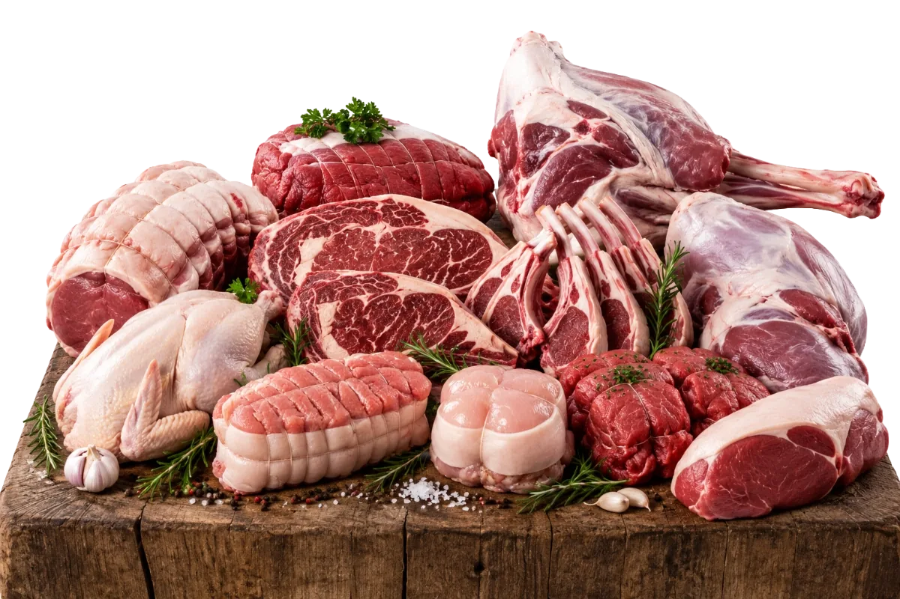
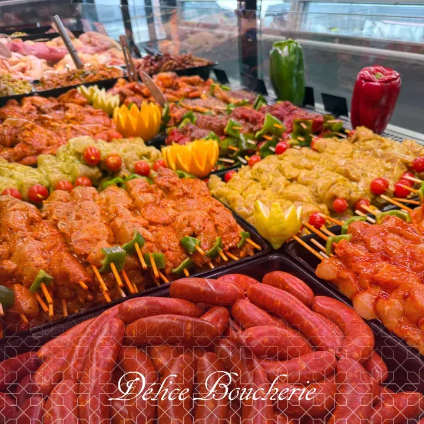
Au comptoir
Notre étal
Faites glisser la vitrine pour tout voir. Prix affichés en boutique.
-
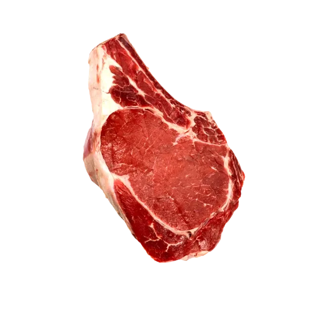
Côte de bœufFrance Persillée, découpée à l'épaisseur voulue. Grill, plancha ou four. -
 Rosbeef ficeléFrance
Préparé et ficelé par nos bouchers.
Rosbeef ficeléFrance
Préparé et ficelé par nos bouchers.
-
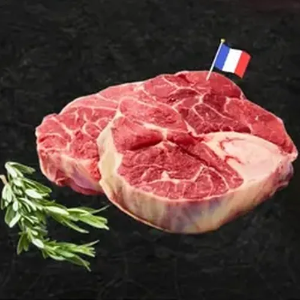
Jarret de bœufFrance Pour pot-au-feu, tajines et mijotés. -
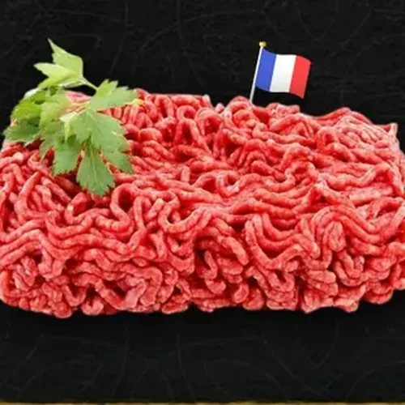
Viande hachéeFrance Hachée minute, idéale kefta et bolognaise. -
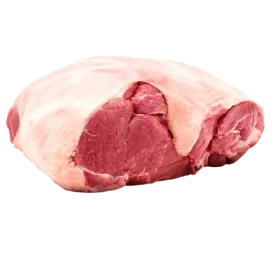
Pièce à grillerFrance Rumsteck ou faux-filet, tendre et maigre. -
 TournedosFrance
Cœur de filet bardé, pour les grandes occasions.
TournedosFrance
Cœur de filet bardé, pour les grandes occasions.
-
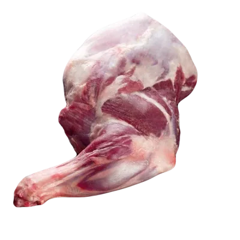
Gigot d'agneauFrance Entier ou en tranches, la pièce reine des fêtes. -
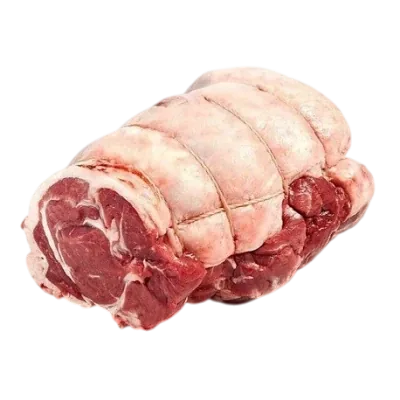
Gigot d'agneau désossé ficeléFrance Prêt à rôtir, facile à trancher. -
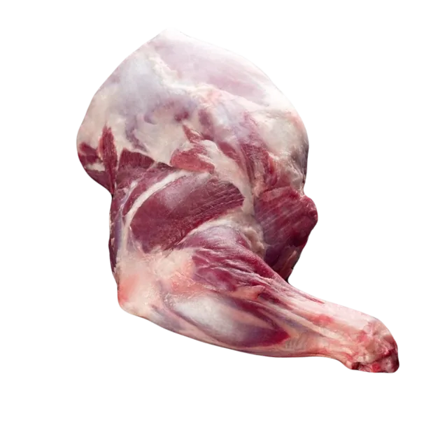
Épaule d'agneauFrance Fondante en cuisson lente, parfaite au four. -
 Côtelettes d'agneauFrance
Le classique du barbecue.
Côtelettes d'agneauFrance
Le classique du barbecue.
-
 Collier d'agneauFrance
Pour couscous et tajines.
Collier d'agneauFrance
Pour couscous et tajines.
-
 Rôti de veauFrance
Bardé et ficelé, tendre et savoureux.
Rôti de veauFrance
Bardé et ficelé, tendre et savoureux.
-
 Côte de veauFrance
Épaisse et nacrée, à la poêle.
Côte de veauFrance
Épaisse et nacrée, à la poêle.
-
 Rôti de veau farciFrance
Préparation maison, prêt à enfourner.
Rôti de veau farciFrance
Préparation maison, prêt à enfourner.
-
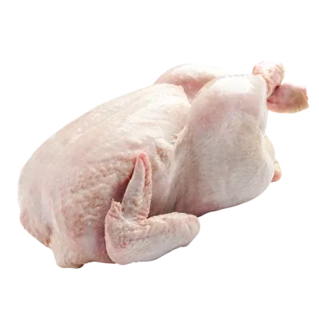
Poulet PACEurope Prêt à cuire, entier ou découpé à la demande. -
 Escalope de pouletEurope
Barquette de 2,5 kg.
Escalope de pouletEurope
Barquette de 2,5 kg.
-
 Cuisse de pouletEurope
Carton de 10 kg, idéal familles et grandes tablées.
Cuisse de pouletEurope
Carton de 10 kg, idéal familles et grandes tablées.
-
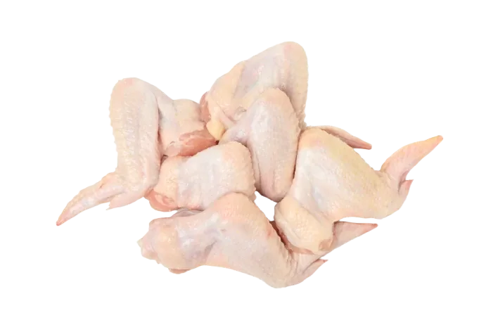
Ailes de pouletEurope À mariner pour le four ou le barbecue. -
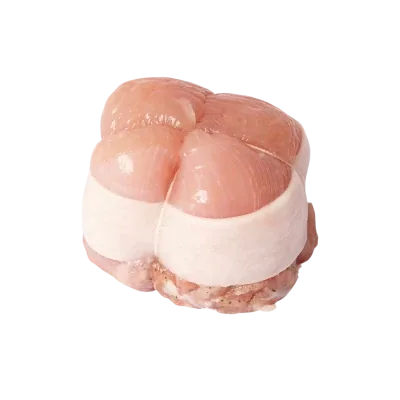
Rôti de volaille farciEurope Farci maison, prêt à cuire. -
 CanetteEurope
Chair fine, à rôtir entière.
CanetteEurope
Chair fine, à rôtir entière.
-
 Magret de canardEurope
À saisir côté peau, rosé à cœur.
Magret de canardEurope
À saisir côté peau, rosé à cœur.
-
 Merguez & saucisses maisonMaison
Recettes de nos bouchers, préparées chaque jour.
Merguez & saucisses maisonMaison
Recettes de nos bouchers, préparées chaque jour.
- Brochettes marinéesMaison Poulet, bœuf ou agneau, marinades maison.
- Plateau barbecueMaison Assortiment sur mesure : merguez, brochettes, côtelettes.
En images
La boutique
Visuels provisoires (Délice Market / Délice Boucherie) — à remplacer par des photos de la boutique.
Avis Google
Ils en parlent
Ce que les clients disent des boucheries Délice
« Dimanche, j'ai réservé un poulet rôti par téléphone, pris à 11h30. Nous nous sommes régalés ! L'étal de viande était tellement beau que j'ai pris un assortiment de brochettes de poulet. Je recommande les yeux fermés. »
Marie-Hélène Rastelli
« De passage pour 2 semaines en camping à Digne : brochettes, bavettes, côte de bœuf à des prix très abordables, avec une qualité de service irréprochable. »
Romain Dezitter
« Wahoo la propreté, les rayons bien rangés. Une vitrine à ne plus savoir quoi choisir. Une viande excellente à prix abordable et des bouchers souriants. Ça manquait à Digne-les-Bains. »
Yazid
Nous trouver
Venir chez Boucherie Délice
14 bis Av. du Majoral Raoul Arnaud, 04100 Manosque
Ouvert 7 jours sur 7, de 8h à 19h
Ouvert 7j/7 · 8h – 19h
La famille Délice
Nos autres boutiques
 Entrer
Supermarché · Manosque
Délice Market
544 Av. Frédéric Mistral, 04100 Manosque
Ouvert 7j/7 · 8h30 – 21h
Entrer
Supermarché · Manosque
Délice Market
544 Av. Frédéric Mistral, 04100 Manosque
Ouvert 7j/7 · 8h30 – 21h
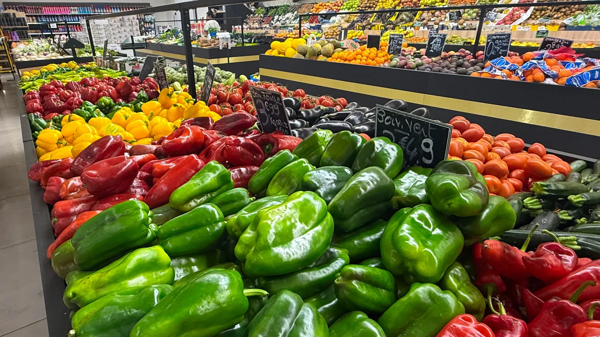
Entrer Nouveau Supermarché · Gap Délice Market Rue des Mimosas, ZAC de Fontreyne, 05000 Gap Ouvert 7j/7 · 8h30 – 21h Entrer
Boucherie · Digne-les-Bains
Délice Boucherie
7 Rue André Honnorat, 04000 Digne-les-Bains
Ouvert 7j/7 · 8h30 – 19h
Entrer
Boucherie · Digne-les-Bains
Délice Boucherie
7 Rue André Honnorat, 04000 Digne-les-Bains
Ouvert 7j/7 · 8h30 – 19h
 Entrer
Primeur · Manosque
Délice Primeur
327 Av. Frédéric Mistral, 04100 Manosque
Ouvert 7j/7 · 6h – 21h
Entrer
Primeur · Manosque
Délice Primeur
327 Av. Frédéric Mistral, 04100 Manosque
Ouvert 7j/7 · 6h – 21h